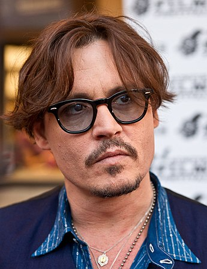

Джон Кри́стофер (Джо́нни) Депп II (англ. John Christopher «Johnny» Depp II; род. 9 июня 1963, Оуэнсборо, Кентукки) — американский актёр, кинорежиссёр, музыкант, сценарист и продюсер. Наибольшую известность Джонни принесли роли в фильмах Тима Бёртона, в таких известных картинах, как «Эдвард Руки-ножницы», «Сонная Лощина», «Чарли и шоколадная фабрика», «Эд Вуд», «Суини Тодд, демон-парикмахер с Флит-стрит» и «Алиса в Стране чудес», мультфильм «Труп невесты», а также образ капитана Джека Воробья в серии фильмов «Пираты Карибского моря», наиболее значимыми фильмами были признаны такие картины, как «Что гложет Гилберта Грэйпа», «Бенни и Джун», «Мертвец», «Донни Браско», «Страх и ненависть в Лас-Вегасе», «Кокаин», «Волшебная страна», «Турист».
